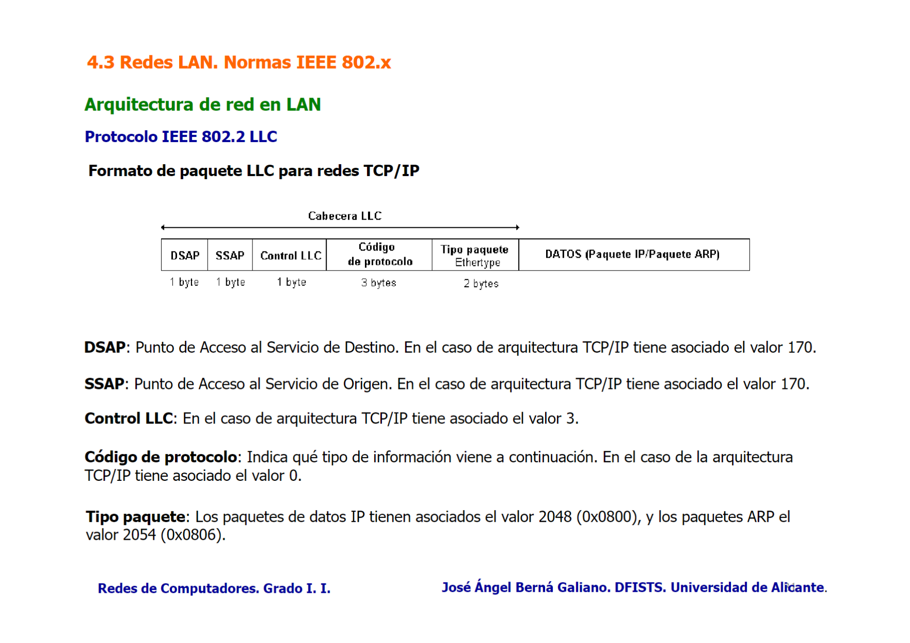

Redes LAN 1 - Normas IEEE 802.X
Redes LAN (Local Area Network). Interconexión de equipos en un segmento físico compartido y reducido.
Velocidades de 10 Mbps - 10Gbps. Comunicación con cables eléctricos, fibra ópticos y comunicación inalámbrica. Las topologías en LAN comunes:
Bus común
Todos los dispositivos conectados a un cable central (bus). Fácil de instalar y mantener. Alta probabilidad de colisiones ante el envió simultáneo desde varios dispositivos.
Estrella
Todos los dispositivos están conectados a una nodo central (hub o switch). Los datos pasan primero por el nodo central y este redirige adecuadamente. Si el nodo central falla toda la red se ve afectada. Mayor costo.
Malla
Cada dispositivo está conectado a todos en la red. Los datos pueden viajar por múltiples caminos desde el origen al destino. Alto costo de implementación debido a los cables y puertos necesarios. Alta tolerancia a fallos, si un enlace falla, los datos pueden tomar otro camino.
Anillo
Los dispositivos están conectados en un anillo cerrado. Los datos viajan en una dirección o en ambas, pasando por cada dispositivo hasta llegar el destino. Colisiones raras por los tiempos de acceso por dispositivo.
Arquitectura de red en LAN
Se incorpora el modelo del IEEE en el modelo TCP/IP.
- LLC: Control del Enlace Lógico. Funcionalidad de control de flujo y errores.
- MAC: Control de Acceso al Medio. Reparto del medio físico, direccionamiento físico, etc.
Arquitectura IEEE 802
IEEE 802.2 (LLC)
Protocolo de Control de Enlace Lógico (LLC).

Integración TCP/IP con IEEE 802
![[Temas Redes.pdf#page=130]]
IEEE 802.3
Ethernet CSMA/CD. Se caracteriza por el uso de un medio físico compartido entre todas las estaciones con topología de bus. Las redes Ethernet son semidúplex (transmisión bidireccional no simultánea), debido a la necesidad de compartir el medio físico, y emplean el mecanismo CSMA/CD para el reparto de este.
Nomenclatura Velocidad - Señalización - Medio físico
Velocidad - 10 (Mbps), 100 (Mbps), 1000 (Mbps), 10G (Gbps) Señalización - Base (banda base, Manchester) o Broad (banda modulada) Medio físico - T (cable UTP), C (cable STP), F (fibra óptica), X (soporte de varios medios físicos).
10Base2
Una de las primeras versiones de Ethernet. Velocidad de 10 Mbps hasta 185 metros.
10Base5
Emplea cable coaxial grueso, permitiendo una velocidad de 10 Mbps a distancias de hasta 500 metros.
10Base2 y 10Base5 desaparecieron con la introducción del cable STP. MTU máximo es de 1492 bytes.
![[Temas Redes.pdf#page=135]]
Ethernet II (Ethernet DIX)
No utiliza la capa LLC, permite introducir el datagrama IP en el paquete de nivel MAC. ![[Temas Redes.pdf#page=136]]
CSMA/CD
Acceso al medio con detección de portadora y de colisión. Tanto Ethernet 802.3 y Ethernet DIX utilizan el mismo mecanismo para compartir el bus común: CSMA/CD. CSMA/CD comprueba el medio físico antes de transmitir un paquete de datos. Su esquema de funcionamiento es semidúplex.
10BaseT
Concentrador Ethernet (hub) UTP. Velocidad de 10 Mbps y 100 metros. Un cable UTP comercial está formado por 4 pares de hilos trenzados. Topología en estrella.
Puentes y puentes transparentes
La interconexión Ethernet se puede mejorar empleando puentes o bridges. Un puente lee todos los paquetes recibidos por un puerto. Los puentes filtran el tráfico de red inspeccionando las direcciones MAC de origen y destino de las tramas. - Si una trama está destinada a una MAC en el mismo segmento de donde proviene el puente la descarta (no la reenvía). - Si está destinada a un segmento diferente la reenvía al segmento correspondiente.
Los puentes transparentes deciden como los paquetes se intercambian entre segmentos, ya que los equipos no conocen la estructura de la red. Son puentes que operan de manera invisible a los dispositivos de la red. No requiere de configuración manual de direcciones MAC y las aprende automáticamente. - Cuando recibe una trama mira la dirección MAC origen y la almacena en su tabla de direcciones asociada al puerto de entrada. - Revisa la MAC destino. Si conoce el puerto de destino reenvía solo por ese puerto. Si no, realiza un flooding, enviando a todos excepto por el que llegó la trama. En un switch típico una dirección MAC está asociada a un único puerto. Direcciones MAC origen.
Los puentes filtran tramas innecesarias, reduciendo el tráfico en cada segmento de la red.
Algoritmo Spanning Tree
Algoritmo de árbol de expansión. Define un protocolo de comunicación entre puentes que consigue una estructura de LANs interconectadas por puentes sin bucles. Se encuentra en la norma IEEE 802.1D MAC Bridge.
- Se elige el puente raíz.
- Se determina el coste RPC (número de redes intermedias, velocidad de transmisión) desde cada puerto al puerto raíz. El de menor coste se llama puerto raíz del puente.
- En cada segmento se elige un puerto designado, que es el puerto con menor valor RPC que esté conectado al puerto designado.
- Se activan todos los puertos raíz y designados de la red, determinando la estructura de árbol.
Ethernet conmutada
Los conmutadores o switches son los puentes multipuerto. - Modo full-duplex: No hay colisiones. Transmisión y recepción simultánea. - Modo half-duplex: Permite la conexión con CSMA/CD (concentrador 10BaseT).
Fast Ethernet (IEEE 802.3u)
Arquitectura cliente/servidor. Cliente - 10Mbps. Servidor - 100Mbps. (Fast Ethernet)
Modo half-duplex (CSMA/CD) y full-duplex.
100BaseX
Fast Ethernet, codificación 4B/5B. Cables UTP categoría 5, STP y fibra óptica.
100BaseFX
Emplea la normativa 100BaseX de codificación 4B/5B sobre fibra óptica multimodo. Codificación NZRI.
100BaseTX
Emplea la normativa 100BaseX de codificación 4B/5B sobre cable UTP categoría 5 (máximo 100 metros). Codificación MLT-3 (3 niveles de amplitud de voltaje).
Gigabit Ethernet
Modo half-duplex (CSMA/CD) y full-duplex.
1000BaseT (IEEE 802.3z)
Alcanza con cable UTP categoría 5 velocidades de 1 Gbps en modo full-duplex. Codificación 4D-PAM5 (4 pares de hilos para transmitir y recibir simultáneamente).
1000BaseX (IEEE 802.3ab)
La transmisión de datos a 1 Gbps por fibra óptica es modificados con un codificador 8B/10B La señal codificada puede transmitirse por fibra óptica o mediante cable STP.
10 Gigabit Ethernet / 10GBase-XX (802.3ae)
Redes 10 Gigabit Ethernet (10GBase-XX) funcionan con full-duplex. Puede usar tanto fibra óptica como STP.
40GBase-XX - 100GBase-XX (802.3ba)
2.5GBase-T - 5GBase-T (802.3bz)
- Cable UTP categoría 4 - 2.5Gbps.
- Cable UTP categoría 6 - 5Gbps.
IEEE 802.5
Token Ring
IEEE 802.1Q
LAN Virtual (VLAN). Puede dividir el conmutador en varios dominios de difusión distintos. Cada dominio de difusión independiente es una VLAN (Virtual Local Area Network). Permiten establecer un dominio de difusión para un conjunto de equipos conectados a un conmutador VLAN. Cada VLAN tiene asociada una IP diferente para que ARP funcione. Id protocol: 0x8100.
Los puertos troncales (trunk ports) pertenecen a varias VLAN y a través de ellos se intercambian con conmutadores distintos.
Enlaces troncales
Los conmutadores VLAN utilizan el protocolo GVRP (GARP VLAN Registration Protocol) para propagar la información entre conmutadores y conocer las VLANs asociadas a los puertos troncales.
IEEE 802.11x
[[Redes LAN 1.1 - IEEE 802.11x LAN Inalámbricas]]